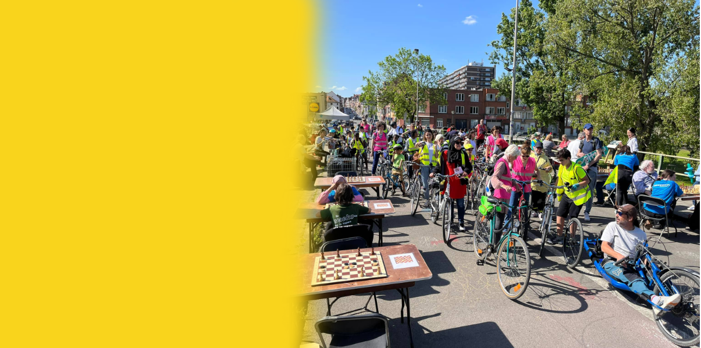
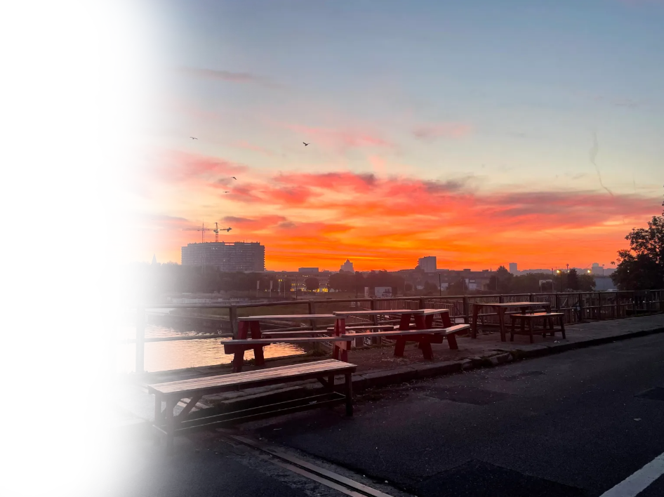

Ceci n'est pas une route, It's a great place to be
Surlepont is een groep inwoners van Anderlecht die de Marchantbrug willen behouden: als uitzichtpunt, als rustplaats, maar ook als groene as en stedelijke sociale ruimte
Les amis du pont
Een plek om elkaar te ontmoeten en plezier te maken
Ontdek een emblematisch panorama dat uitnodigt om tot rust te komen, een stedelijke sociale plek die bevorderlijk is voor ontmoetingen en activiteiten en een groene as die actieve mobiliteit en gezond leven via de gallery bevordert.
Galerij

Geschiedenis van de brug
Wist je dat de brug niet altijd was wat hij nu is? Leer vanaf nu meer!
Zijn Geschiedenis